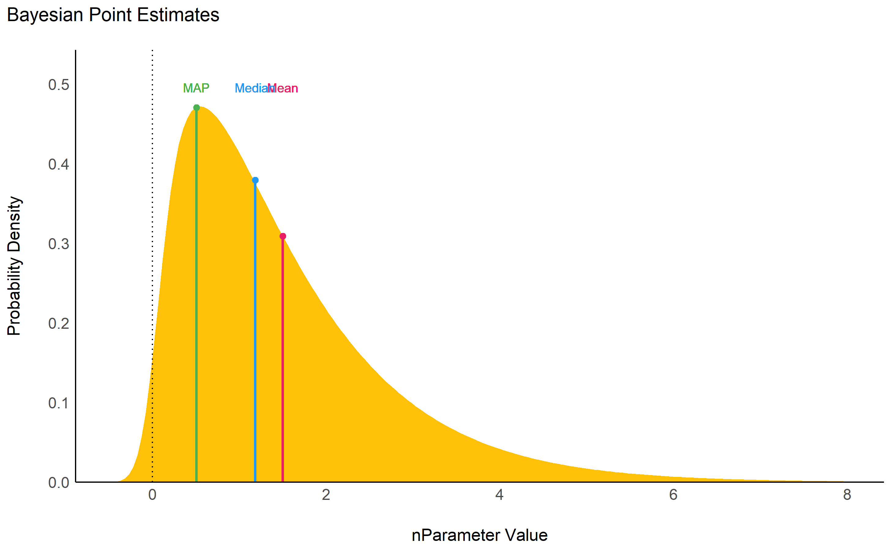

Become a Bayesian master you will
⚠️ We changed the default the CI width! Please make an informed decision and set it explicitly (ci = 0.89, ci = 0.95 or anything else that you decide) ⚠️
Existing R packages allow users to easily fit a large variety of models and extract and visualize the posterior draws. However, most of these packages only return a limited set of indices (e.g., point-estimates and CIs). bayestestR provides a comprehensive and consistent set of functions to analyze and describe posterior distributions generated by a variety of models objects, including popular modeling packages such as rstanarm, brms or BayesFactor.
You can reference the package and its documentation as follows:
- Makowski, D., Ben-Shachar, M. S., & Lüdecke, D. (2019). bayestestR: Describing Effects and their Uncertainty, Existence and Significance within the Bayesian Framework. Journal of Open Source Software, 4(40), 1541. 10.21105/joss.01541
- Makowski, D., Ben-Shachar, M. S., Chen, S. H. A., & Lüdecke, D. (2019). Indices of Effect Existence and Significance in the Bayesian Framework. Frontiers in Psychology 2019;10:2767. 10.3389/fpsyg.2019.02767
Installation

The bayestestR package is available on CRAN, while its latest development version is available on R-universe (from rOpenSci).
| Type | Source | Command |
|---|---|---|
| Release | CRAN | install.packages("bayestestR") |
| Development | R-universe | install.packages("bayestestR", repos = "https://easystats.r-universe.dev") |
Once you have downloaded the package, you can then load it using:
Tip
Instead of
library(bayestestR), uselibrary(easystats). This will make all features of the easystats-ecosystem available.To stay updated, use
easystats::install_latest().
Features
In the Bayesian framework, parameters are estimated in a probabilistic fashion as distributions. These distributions can be summarised and described by reporting four types of indices:
-
Centrality
-
mean(),median()ormap_estimate()for an estimation of the mode. -
point_estimate()can be used to get them at once and can be run directly on models.
-
- Uncertainty
-
Effect Existence: whether an effect is different from 0.
-
p_direction()for a Bayesian equivalent of the frequentist p-value (see Makowski et al., 2019) -
p_pointnull()represents the odds of null hypothesis (h0 = 0) compared to the most likely hypothesis (the MAP). -
bf_pointnull()for a classic Bayes Factor (BF) assessing the likelihood of effect presence against its absence (h0 = 0).
-
-
Effect Significance: whether the effect size can be considered as non-negligible.
-
p_rope()is the probability of the effect falling inside a Region of Practical Equivalence (ROPE). -
bf_rope()computes a Bayes factor against the null as defined by a region (the ROPE). -
p_significance()that combines a region of equivalence with the probability of direction.
-
describe_posterior() is the master function with which you can compute all of the indices cited below at once.
describe_posterior(
rnorm(10000),
centrality = "median",
test = c("p_direction", "p_significance"),
verbose = FALSE
)
## Summary of Posterior Distribution
##
## Parameter | Median | 95% CI | pd | ps
## --------------------------------------------------
## Posterior | -0.01 | [-1.98, 1.93] | 50.52% | 0.46describe_posterior() works for many objects, including more complex brmsfit-models. For better readability, the output is separated by model components:
zinb <- read.csv("http://stats.idre.ucla.edu/stat/data/fish.csv")
set.seed(123)
model <- brm(
bf(
count ~ child + camper + (1 | persons),
zi ~ child + camper + (1 | persons)
),
data = zinb,
family = zero_inflated_poisson(),
chains = 1,
iter = 500
)
describe_posterior(
model,
effects = "all",
component = "all",
test = c("p_direction", "p_significance"),
centrality = "all"
)## Summary of Posterior Distribution
##
## Parameter | Median | Mean | MAP | 95% CI | pd | ps | Rhat | ESS
## --------------------------------------------------------------------------------------
## (Intercept) | 0.96 | 0.96 | 0.96 | [-0.81, 2.51] | 90.00% | 0.88 | 1.011 | 110.00
## child | -1.16 | -1.16 | -1.16 | [-1.36, -0.94] | 100% | 1.00 | 0.996 | 278.00
## camper | 0.73 | 0.72 | 0.73 | [ 0.54, 0.91] | 100% | 1.00 | 0.996 | 271.00
##
## # Fixed effects (zero-inflated)
##
## Parameter | Median | Mean | MAP | 95% CI | pd | ps | Rhat | ESS
## --------------------------------------------------------------------------------------
## (Intercept) | -0.48 | -0.51 | -0.22 | [-2.03, 0.89] | 78.00% | 0.73 | 0.997 | 138.00
## child | 1.85 | 1.86 | 1.81 | [ 1.19, 2.54] | 100% | 1.00 | 0.996 | 303.00
## camper | -0.88 | -0.86 | -0.99 | [-1.61, -0.07] | 98.40% | 0.96 | 0.996 | 292.00
##
## # Random effects (conditional) Intercept: persons
##
## Parameter | Median | Mean | MAP | 95% CI | pd | ps | Rhat | ESS
## ---------------------------------------------------------------------------------------
## persons.1 | -0.99 | -1.01 | -0.84 | [-2.68, 0.80] | 92.00% | 0.90 | 1.007 | 106.00
## persons.2 | -4.65e-03 | -0.04 | 0.03 | [-1.63, 1.66] | 50.00% | 0.45 | 1.013 | 109.00
## persons.3 | 0.69 | 0.66 | 0.69 | [-0.95, 2.34] | 79.60% | 0.78 | 1.010 | 114.00
## persons.4 | 1.57 | 1.56 | 1.56 | [-0.05, 3.29] | 96.80% | 0.96 | 1.009 | 114.00
##
## # Random effects (zero-inflated) Intercept: persons
##
## Parameter | Median | Mean | MAP | 95% CI | pd | ps | Rhat | ESS
## ------------------------------------------------------------------------------------
## persons.1 | 1.10 | 1.11 | 1.08 | [-0.23, 2.72] | 94.80% | 0.93 | 0.997 | 166.00
## persons.2 | 0.18 | 0.18 | 0.22 | [-0.94, 1.58] | 63.20% | 0.54 | 0.996 | 154.00
## persons.3 | -0.30 | -0.31 | -0.54 | [-1.79, 1.02] | 64.00% | 0.59 | 0.997 | 154.00
## persons.4 | -1.45 | -1.46 | -1.44 | [-2.90, -0.10] | 98.00% | 0.97 | 1.000 | 189.00
##
## # Random effects (conditional) SD/Cor: persons
##
## Parameter | Median | Mean | MAP | 95% CI | pd | ps | Rhat | ESS
## ----------------------------------------------------------------------------------
## (Intercept) | 1.42 | 1.58 | 1.07 | [ 0.71, 3.58] | 100% | 1.00 | 1.010 | 126.00
##
## # Random effects (zero-inflated) SD/Cor: persons
##
## Parameter | Median | Mean | MAP | 95% CI | pd | ps | Rhat | ESS
## ----------------------------------------------------------------------------------
## (Intercept) | 1.30 | 1.49 | 0.99 | [ 0.63, 3.41] | 100% | 1.00 | 0.996 | 129.00bayestestR also includes many other features useful for your Bayesian analyses. Here are some more examples:
Point-estimates
library(bayestestR)
posterior <- distribution_gamma(10000, 1.5) # Generate a skewed distribution
centrality <- point_estimate(posterior) # Get indices of centrality
centrality
## Point Estimate
##
## Median | Mean | MAP
## --------------------
## 1.18 | 1.50 | 0.51As for other easystats packages, plot() methods are available from the see package for many functions:

While the median and the mean are available through base R functions, map_estimate() in bayestestR can be used to directly find the Highest Maximum A Posteriori (MAP) estimate of a posterior, i.e., the value associated with the highest probability density (the “peak” of the posterior distribution). In other words, it is an estimation of the mode for continuous parameters.
Uncertainty (CI)
hdi() computes the Highest Density Interval (HDI) of a posterior distribution, i.e., the interval which contains all points within the interval have a higher probability density than points outside the interval. The HDI can be used in the context of Bayesian posterior characterization as Credible Interval (CI).
Unlike equal-tailed intervals (see eti()) that typically exclude 2.5% from each tail of the distribution, the HDI is not equal-tailed and therefore always includes the mode(s) of posterior distributions.
posterior <- distribution_chisquared(10000, 4)
hdi(posterior, ci = 0.89)
## 89% HDI: [0.18, 7.63]
eti(posterior, ci = 0.89)
## 89% ETI: [0.75, 9.25]
Existence and Significance Testing
Probability of Direction (pd)
p_direction() computes the Probability of Direction (pd, also known as the Maximum Probability of Effect - MPE). It varies between 50% and 100% (i.e., 0.5 and 1) and can be interpreted as the probability (expressed in percentage) that a parameter (described by its posterior distribution) is strictly positive or negative (whichever is the most probable). It is mathematically defined as the proportion of the posterior distribution that is of the median’s sign. Although differently expressed, this index is fairly similar (i.e., is strongly correlated) to the frequentist p-value.
Relationship with the p-value: In most cases, it seems that the pd corresponds to the frequentist one-sided p-value through the formula p-value = (1-pd/100) and to the two-sided p-value (the most commonly reported) through the formula p-value = 2*(1-pd/100). Thus, a pd of 95%, 97.5% 99.5% and 99.95% corresponds approximately to a two-sided p-value of respectively .1, .05, .01 and .001. See the reporting guidelines.
posterior <- distribution_normal(10000, 0.4, 0.2)
p_direction(posterior)
## Probability of Direction
##
## Parameter | pd
## ------------------
## Posterior | 97.72%
ROPE
rope() computes the proportion (in percentage) of the HDI (default to the 89% HDI) of a posterior distribution that lies within a region of practical equivalence.
Statistically, the probability of a posterior distribution of being different from 0 does not make much sense (the probability of it being different from a single point being infinite). Therefore, the idea underlining ROPE is to let the user define an area around the null value enclosing values that are equivalent to the null value for practical purposes Kruschke (2018).
Kruschke suggests that such null value could be set, by default, to the -0.1 to 0.1 range of a standardized parameter (negligible effect size according to Cohen, 1988). This could be generalized: For instance, for linear models, the ROPE could be set as 0 +/- .1 * sd(y). This ROPE range can be automatically computed for models using the rope_range function.
Kruschke suggests using the proportion of the 95% (or 90%, considered more stable) HDI that falls within the ROPE as an index for “null-hypothesis” testing (as understood under the Bayesian framework, see equivalence_test).
posterior <- distribution_normal(10000, 0.4, 0.2)
rope(posterior, range = c(-0.1, 0.1))
## # Proportion of samples inside the ROPE [-0.10, 0.10]:
##
## inside ROPE
## -----------
## 4.40 %
Bayes Factor
bayesfactor_parameters() computes Bayes factors against the null (either a point or an interval), bases on prior and posterior samples of a single parameter. This Bayes factor indicates the degree by which the mass of the posterior distribution has shifted further away from or closer to the null value(s) (relative to the prior distribution), thus indicating if the null value has become less or more likely given the observed data.
When the null is an interval, the Bayes factor is computed by comparing the prior and posterior odds of the parameter falling within or outside the null; When the null is a point, a Savage-Dickey density ratio is computed, which is also an approximation of a Bayes factor comparing the marginal likelihoods of the model against a model in which the tested parameter has been restricted to the point null (Wagenmakers, Lodewyckx, Kuriyal, & Grasman, 2010).
prior <- distribution_normal(10000, mean = 0, sd = 1)
posterior <- distribution_normal(10000, mean = 1, sd = 0.7)
bayesfactor_parameters(posterior, prior, direction = "two-sided", null = 0, verbose = FALSE)
## Bayes Factor (Savage-Dickey density ratio)
##
## BF
## ----
## 1.94
##
## * Evidence Against The Null: 0
The lollipops represent the density of a point-null on the prior distribution (the blue lollipop on the dotted distribution) and on the posterior distribution (the red lollipop on the yellow distribution). The ratio between the two - the Savage-Dickey ratio - indicates the degree by which the mass of the parameter distribution has shifted away from or closer to the null.
For more info, see the Bayes factors vignette.
Utilities
Find ROPE’s appropriate range
rope_range(): This function attempts at automatically finding suitable “default” values for the Region Of Practical Equivalence (ROPE). Kruschke (2018) suggests that such null value could be set, by default, to a range from -0.1 to 0.1 of a standardized parameter (negligible effect size according to Cohen, 1988), which can be generalised for linear models to -0.1 * sd(y), 0.1 * sd(y). For logistic models, the parameters expressed in log odds ratio can be converted to standardized difference through the formula sqrt(3)/pi, resulting in a range of -0.05 to 0.05.
rope_range(model)Density Estimation
estimate_density(): This function is a wrapper over different methods of density estimation. By default, it uses the base R density with by default uses a different smoothing bandwidth ("SJ") from the legacy default implemented the base R density function ("nrd0"). However, Deng & Wickham suggest that method = "KernSmooth" is the fastest and the most accurate.
Perfect Distributions
distribution(): Generate a sample of size n with near-perfect distributions.
distribution(n = 10)
## [1] -1.55 -1.00 -0.66 -0.38 -0.12 0.12 0.38 0.66 1.00 1.55Probability of a Value
density_at(): Compute the density of a given point of a distribution.
density_at(rnorm(1000, 1, 1), 1)
## [1] 0.41Code of Conduct
Please note that the bayestestR project is released with a Contributor Code of Conduct. By contributing to this project, you agree to abide by its terms.